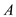
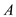

Refer to equation (2.5) in the textbook.
Write the general expression for gain.
…… (1)
Here,
 is the open loop gain of op-amp.
 is the closed loop gain of op-amp.
is the closed loop gain of op-amp.
Refer to equation (2.5) in the textbook.
Write the general expression for gain.
…… (1)
Here,
 is the open loop gain of op-amp.
is the closed loop gain of op-amp.
Differentiate equation (1) with respect to  .
.
Substitute  for in the equation.
for in the equation.
As the open loop gain  of an op-amp approaches
of an op-amp approaches , the value is . Hence, neglect in the denominator of the equation.
, the value is . Hence, neglect in the denominator of the equation.
Therefore, a reduction  in the op-amp gain
in the op-amp gain  gives rise to a reduction in the magnitude of the closed-loop gain
gives rise to a reduction in the magnitude of the closed-loop gain  with
with  and related by
and related by
.
(b)
Consider the relation obtained in part (a).
Substitute  for ,
for ,  for , and 100 for in the equation.
for , and 100 for in the equation.
Thus, the minimum nominal  required to limit the percentage change in
required to limit the percentage change in  to is,
to is,
 .
.